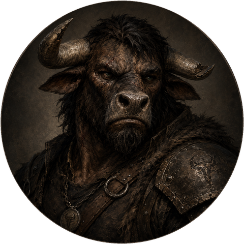
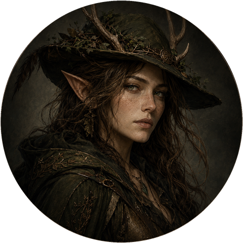
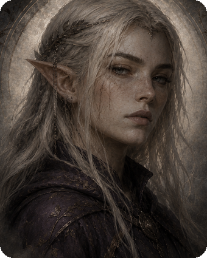
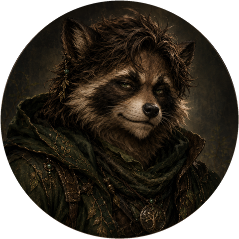

The Party
Six strangers who boarded a train together. They fight under a borrowed name now.
Main Party
Chango K Caza
A Venaran bounty hunter who boarded the Desert Rose with his prisoner, the archaeologist Nathan Indiana Croft, in tow. He's since loosened Nathan's bindings in exchange for what he knew about stopping the Setantii — whether he means to let the man go entirely, he still hasn't said. He still carries an unmarked pocket watch engraved "T.R.", found on that same train, that no one has been able to place.
Off the clock, he wants the indentured Venaran blacksmith freed, and a way of his own up into the Cobbles. Keeps to himself more than most — cleaning his pistols, trading quiet words with Nathan — but the Colosseum attack rattled him enough to admit, afterward, that he needed a break.
Coren Vael
One blue eye, one green — a mark of his birth lineage — and once a member of the Silent Knives. He fled Abrams Rest after a botched solo job, stabbing his partner Jareth mid-spell in their safehouse before running for reasons he still hasn't fully explained.
Ressa told him what he came back to: the Knives wiped out in his absence, herself spared and put to work as a foreman. A journal on Subject 442 finally answered what happened to Jareth's body — and revealed that Coren's mother is the hag Callow May, a secret he's at last shared with the party. Born in Dreadmere Marsh; these days, home is nowhere in particular.
Hylanku Lonehorn

One horn broken, and a voice that still comes out in blunt, almost neanderthal common. He believes someone he's looking for is being held by the Professor in the Library, and carries real guilt over failing to protect the party during the bat attack at the Colosseum — guilt heavy enough that a prayer to Jarak afterward answered with the blessed one devotion, and a deeper well of healing magic to draw on.
He prays with a token given to him by "Old Bull," wears a half plate Yangu gave him, and keeps a broken manacle chain around his wrists as a reminder even after asking to have it cut. Hasn't stopped searching for a red-haired elven mage named Foxfire.
Lira Cervan

Came to Abrams Rest looking for her elk, Thallion, and enlisted the party to help win him back in a Colosseum fight — successfully. She keeps him tucked inside her hat when he's not needed; antlers appear on the brim the moment he vanishes into it.
Spent a day helping wrap the bat attack's dead for the city's funeral rites, and used the grief in the room to plant a little distrust of the guards who'd let it happen. Tries reading the future by dust and jar more often than it actually works. Home is the Dead Woods, whenever she makes it back.
Luxem

Never said why she was travelling to Abrams Rest, and wasn't glad to find another elf already in the party. She unwittingly triggered the Setantii at the goblin camp and was knocked cold — and never fully woke from it, a mystery even the Plague Doctor couldn't explain despite everything looking physically fine.
Died in her sleep during the Cobbles work; Hylanku learned of it in Session 9. Wrapped for the city's funeral rites and sent into the Drop with one of Quercucoonie's seeds, so she'd have something to grow wherever she ended up.
Quercucoonie

On a mission to reforest his dying homeland, and to understand why it's dying in the first place. He's asked Ressa about survey work involving the mind, and prays to a deity named Orth. On impulse, bought a man being sold at auction as "Item 297," meant to free him outright, and ended up with Kuldosk joining the party instead.
His summoned eidolon, Verdant Shade — a tree-like creature that shares his health pool — rarely strays far, and reforms from roots when it's dismissed by force. Home is the Hodenbaumhaut Forest.
Temporarily Joined the Party
Phil Philliamson
Joined the party the moment they arrived — a benefactor paid him to watch them, though he's never said who. Nicknamed "Crosswind Phil," he hinted there are ways into the Cobbles that don't need a pass.
An old injury left him scarred and imbued with magic that once saved his life; the scar still flashes blue and whispers at the mention of magic. He wants the Baron gone, fought hard in the Colosseum, and was last seen fleeing the opposite gate once the bats came down.
Karl
Never seen in Abrams Rest, and yet nothing happens there without him. Every quota, every closed gate, every bat that falls out of a clear sky answers to him first. He built the Blighted West grain by grain, gave the Baron his cruelty and the Professor his curiosity, and has never once let the party see the whole map.
Roll well, and he might let you keep something you love. Roll badly, and — by the look on his face — he already knew you would.